Installation is not complicated, but unfortunately, it is not trivial either.
I have already said that Watir is “just” a piece of software written in Ruby, so to install it, you have to install Ruby first. Since both Ruby and Watir are available on Windows, Mac and Linux and each of them has several releases currently in use (or in case of Linux, both distributions and releases), I will cover what I think is the relevant ones. I will use the most recent stable Ruby release, 1.9.2.
I am installing everything in VMware Fusion 3.1.3 virtual machines, except Mac OS, since it does not want to be virtualized. Host OS for VMware Fusion is Mac OS X 10.6.8.
You will probably be bored to tears if you read all installation chapters. A lot of stuff is repeated. I suggest that you read only the chapters you need. Feel free to read the rest of the book in the whole.
You will need internet access if you want to follow examples in this chapter.
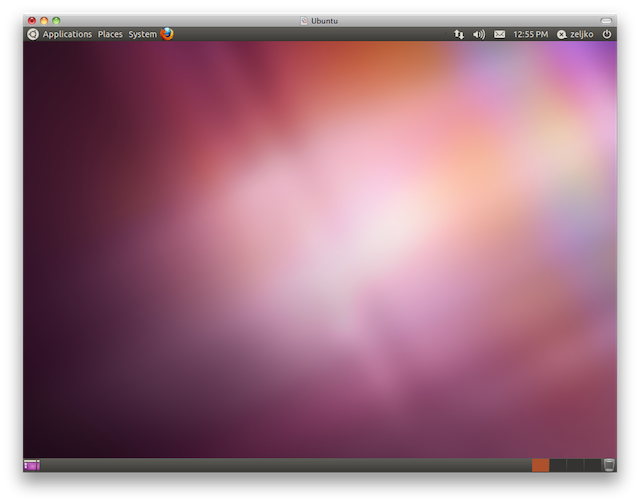
Windows 7 default desktop
Machine is a clean installation of:
Windows 7 and Vista machines have 1 GB RAM, XP has 512 MB. All machines are fully patched, including Internet Explorer 9 on Windows 7 and Vista. I left Internet Explorer on version 6 at XP machine, just for fun.
I did not notice any difference in installing or using Watir on any version on Windows, so I have decided to put them in one chapter.
You probably do not have Ruby installed. To make sure, open command prompt and type ruby -v. On 7 and Vista open command prompt with Start > Search programs and files > cmd > Enter, and on XP with Start > Run… > cmd > Enter.
1 >ruby -v
2 'ruby' is not recognized as an internal or external command,
3 operable program or batch file.
If you get the same thing as I did, you do not have Ruby installed.
Download the latest Ruby 1.9. from rubyinstaller.org/downloads. At the moment it is Ruby 1.9.3-p0. Execute the file.
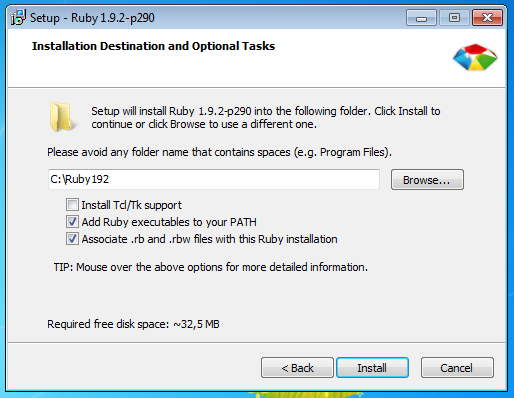
Ruby Installation
You can leave all settings at default values, except at the Installation Destination and Optional Tasks screen check both Add Ruby executables to your PATH and Associate .rb and .rbw files with this Ruby installation checkboxes. Installation should take you just a few seconds.
Let’s check if Ruby is installed. You will have to open another command prompt, because the one you have opened does not see Ruby.
1 >ruby -v
2 ruby 1.9.3p0 (2011-10-30) [i386-mingw32]
Congratulations! You now have the latest and greatest Ruby, 1.9.3!
Software written in Ruby is usually distributed as RubyGems (colloquial name is gem), Ruby package manager. Sometimes Ruby installations do not have the latest versions of RubyGems, so we will first update it. RubyGems is also a gem, (a bit recursive, right?) and we get it’s version with gem -v.
1 >gem -v
2 1.8.11
You should update it with gem update --system:
1 >gem update --system
2 (...)
3 RubyGems system software updated
Ask RubyGems again for it’s version, just to make sure:
1 >gem -v
2 1.8.12
Watir and watir-webdriver gems needs ffi gem, and it needs RubyInstaller Development Kit (DevKit) . Do not worry, it is not complicated as it sounds. If you do not have DevKit installed, you will get this error message while installing watir or watir-webdriver gems:
1 Fetching: ffi-1.0.11.gem (100%)
2 ERROR: Error installing watir:
3 The 'ffi' native gem requires installed build tools.
4
5 Please update your PATH to include build tools or download the DevKit
6 from 'http://rubyinstaller.org/downloads' and follow the instructions
7 at 'http://github.com/oneclick/rubyinstaller/wiki/Development-Kit'
The solution is easy. Go to http://rubyinstaller.org/downloads and download the latest version of DevKit. At the moment it is DevKit-tdm-32-4.5.2-20110712-1620-sfx.exe. Execute the file. It tried to install in the folder where the file was located, in my case it was C:\Documents and Settings\zeljko\Desktop\. The documentation says spaces in path could cause trouble, as is often the case. Install it to C:\devkit. It will actually just extract itself there and DevKit window will disappear. There will be no Installation OK popup.
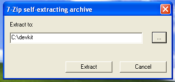
Where to extract DevKit
DevKit extracting
Go to C:\devkit in command prompt and type ruby dk.rb init:
1 C:\devkit>ruby dk.rb init
2 [INFO] found RubyInstaller v1.9.3 at C:/Ruby193
3
4 Initialization complete! Please review and modify the auto-generated
5 'config.yml' file to ensure it contains the root directories to all
6 of the installed Rubies you want enhanced by the DevKit.
And the final step is ruby dk.rb install:
1 C:\devkit>ruby dk.rb install
2 [INFO] Installing 'C:/Ruby193/lib/ruby/
3 site_ruby/1.9.1/rubygems/defaults/operating_system.rb'
4 [INFO] Installing 'C:/Ruby193/lib/ruby/site_ruby/devkit.rb'
That is it, you are ready to install watir and watir-webdriver gems.
Internet Explorer 9 on Windows 7
Let’s install Watir, finally. It is also done from the command line, the command is gem install watir. I prefer to add --no-ri --no-rdoc options, because I do not use either ri (Ruby Index) or RDoc (Ruby Documentation), and it cuts installation time to one third. So, if you want ri or Rdoc, use gem install watir, else use gem install watir --no-ri --no-rdoc.
Watir gem (the whole Watir project got named after this gem) can drive Internet Explorer. It has better Internet Explorer support than watir-webdriver gem. Install it with gem install watir --no-ri --no-rdoc.
1 >gem install watir --no-ri --no-rdoc
2 (...)
3 Successfully installed watir-2.0.4
4 (...)
Let’s drive Internet Explorer with it:
1 >irb
2
3 > require "watir"
4 => true
5
6 > browser = Watir::Browser.new
7 => #<Watir::IE:0x..f8169d746 url="about:blank" title="">
8
9 > browser.goto "watir.com"
10 => 16.998912
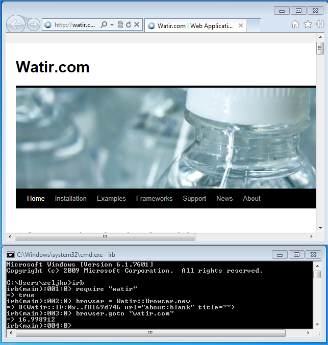
watir gem drives Internet Explorer 9 on Windows 7
If you are just starting with Watir, start with watir-webdriver gem. It can drive Internet Explorer, Firefox, Chrome, and Opera.
Install it with gem install watir-webdriver --no-ri --no-rdoc:
1 >gem install watir-webdriver --no-ri --no-rdoc
2 (...)
3 Successfully installed watir-webdriver-0.4.1
4 (...)
Since Internet Explorer is already installed, we will start with it. Let’s see if watir-webdriver can drive Internet Explorer:
1 >irb
2
3 > require "watir-webdriver"
4 => true
5
6 > browser = Watir::Browser.new :ie
7 Selenium::WebDriver::Error::NoSuchDriverError: Unexpected error
8 launching Internet Explorer. Protected Mode must be set to the
9 same value (enabled or disabled) for all zones.
10 (...)
On 7 and Vista I got Protected Mode must be set to the same value (enabled or disabled) for all zones error message (does not appear for Internet Explorer 6 on Windows XP) and Windows Firewall popup appeared letting me know that it has blocked C:\ruby192\bin\ruby.exe. So, XP/IE6 users can skip enabling protected mode.
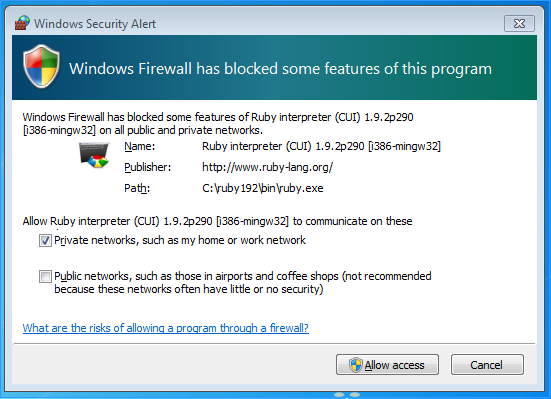
Windows Firewall has blocked some features of this program
For now just close the popup, let’s see how to fix the error message.
Open Internet Explorer > wrench > Internet Options > Security. There are four zones: Internet, Local intranet, Trusted sites and Restricted sites. Protected Mode is enabled by default in Internet and Restricted sites. Enable it for Local intranet and Trusted sites and close the browser.
Enable Protected Mode for all zones
Let’ try again:
1 >irb
2
3 > require "watir-webdriver"
4 => true
5
6 > browser = Watir::Browser.new :ie
7 => #<Watir::Browser:0x..fcf3d4bb8 url="http://localhost:5555/"
8 title="WebDriver">
9
10 > browser.goto "watir.com"
11 => "http://watir.com/"
It works!
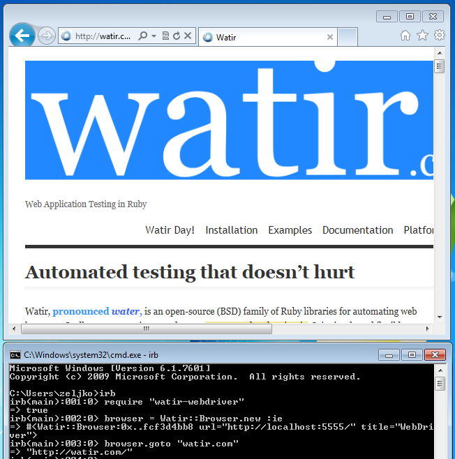
watir-webdriver gem drives Internet Explorer 9 on Windows 7
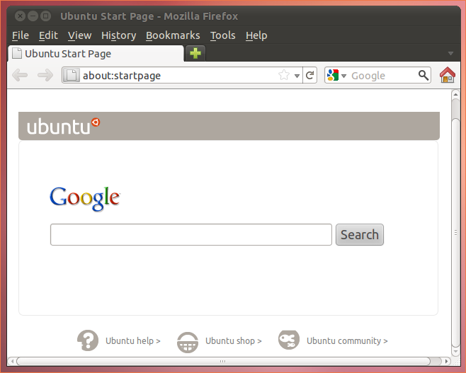
Firefox 5 on Windows 7
Firefox 5 on Windows 7
Can it drive Firefox? It can! (If you do not have it installed, download it from mozilla.com/firefox.)
1 >irb
2
3 > require "watir-webdriver"
4 => true
5
6 > browser = Watir::Browser.new :ff
7 => #<Watir::Browser:0x62d8c4a6 url="about:blank" title="">
8
9 > browser.goto "watir.com"
10 => "http://watir.com/"
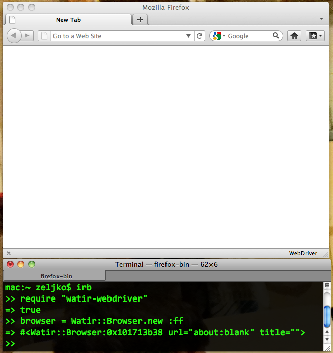
watir-webdriver gem drives Firefox 5 on Windows 7
Chrome 13 on Windows 7
Could it be that it can drive Chrome too? Let’s find out. (You can get Chrome at google.com/chrome.)
1 >irb
2
3 > require "watir-webdriver"
4 => true
5
6 > browser = Watir::Browser.new :chrome
7 Selenium::WebDriver::Error::WebDriverError: Unable to find the
8 chromedriver executable. Please download the server from
9 http://code.google.com/p/chromium/downloads/list and place it
10 somewhere on your PATH. More info at
11 http://code.google.com/p/selenium/wiki/ChromeDriver.
12 (...)
Looks like there is a problem. You have to download chromedriver_win32_14.0.836.0.zip (or newer version) from http://code.google.com/p/chromium/downloads/list. Unzip the file (you will get chromedriver.exe) and put it in any folder that is in your PATH. To check which folders are in PATH, open command prompt and type path:
1 >path
2 PATH=C:\Windows\system32;C:\Windows;C:\Windows\System32\Wbem;
3 C:\Windows\System32\WindowsPowerShell\v1.0\;C:\Ruby192\bin
Folders are separated with ;. C:\Ruby192\bin looks like a good place, so I will put chromedriver.exe there. Let’s try again:
1 >irb
2
3 > require "watir-webdriver"
4 => true
5
6 > browser = Watir::Browser.new :chrome
7 Started ChromeDriver
8 port=49522
9 => #<Watir::Browser:0x..fdbf27548 url="about:blank"
10 title="about:blank">
11
12 > browser.goto "watir.com"
13 => "http://watir.com/"
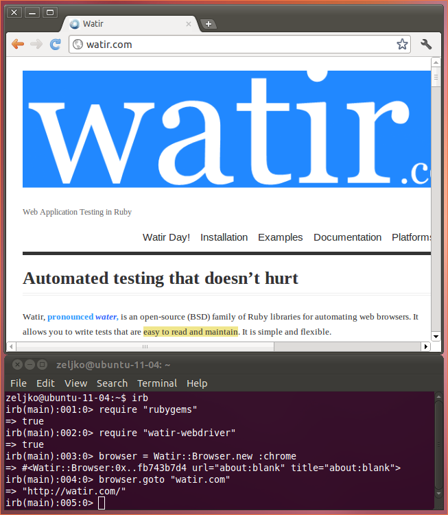
watir-webdriver gem drives Chrome 12 on Windows 7
I got Windows Firewall popup again letting me know that it has blockedC:\ruby192\bin\chromedriver.exe. Just close it for now, I have no idea what to do with it.
To drive Opera, you will have to install Java first. Let’s check if Java is already installed with java -version:
1 >java -version
2 'java' is not recognized as an internal or external command,
3 operable program or batch file.
Looks like we will have to install Java. There is big Free Java Download button at
http://www.java.com/en/download. Execute download file and install Java. Let’s check if Java is really installed with java -version:
1 >java -version
2 java version "1.6.0_26"
3 Java(TM) SE Runtime Environment (build 1.6.0_26-b03)
4 Java HotSpot(TM) Client VM (build 20.1-b02, mixed mode, sharing)
Looks good to me!
Opera on Windows 7
And finally, let’s drive Opera. If you do not have it installed, you can get it at opera.com.
1 >irb
2
3 > require "watir-webdriver"
4 => true
5
6 > browser = Watir::Browser.new :opera
7 Selenium::WebDriver::Error::WebDriverError: Unable to find the
8 Selenium server jar. Please download the standalone server from
9 http://code.google.com/p/selenium/downloads/list and set the
10 SELENIUM_SERVER_JAR environmental variable to its location. More
11 info at http://code.google.com/p/selenium/wiki/OperaDriver.
Download selenium-server-standalone-2.5.0.jar (or newer version) from
http://code.google.com/p/selenium/downloads/list and put it in C:\Ruby192\bin. Then make SELENIUM_SERVER_JAR environmental variable and set it to C:\Ruby192\bin\selenium-server-standalone-2.5.0.jar. To create environmental variable, right click computer and click Properties > Advanced system settings > Environmental Variables > User variables > New... > Variable name: SELENIUM_SERVER_JAR > Variable value: C:\Ruby192\bin\selenium-server-standalone-2.5.0.jar > OK > OK > OK.
Open new command prompt, the old one will not see SELENIUM_SERVER_JAR variable.
1 >irb
2
3 > require "watir-webdriver"
4 => true
5
6 > browser = Watir::Browser.new :opera
7 Selenium::WebDriver::Error::UnhandledError: No response in a
8 timely fashion.
9 Build info: version: '2.3.0', revision: '13158', time:
10 '2011-08-01 18:13:39'
11 System info: os.name: 'Windows 7', os.arch: 'x86',
12 os.version: '6.1', java.version: '1.6.0_26'
13 Driver info: driver.version: OperaDriver
14 (com.opera.core.systems.scope.exceptions.
15 ResponseNotReceivedException)
IRB said No response in a timely fashion. Then I got Windows Firewall popup. Since I do not know what to do with it, just close the popup.
Windows Firewall blocking Java
And finally I got Opera startup error popup saying: Opera has failed to access or upgrade your profile. This may have occurred because your computer has insufficient resources available or because some files are locked by other applications. You may have to restart your computer before Opera will start again.
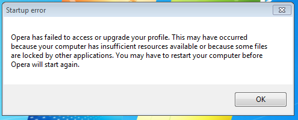
Opera startup error
Well, rebooting did not help. Not even reinstalling Opera (and then rebooting). What did help is running command prompt as administrator. So, instead of Start > Search programs and files > cmd > Enter, right click cmd and select Run as administrator.
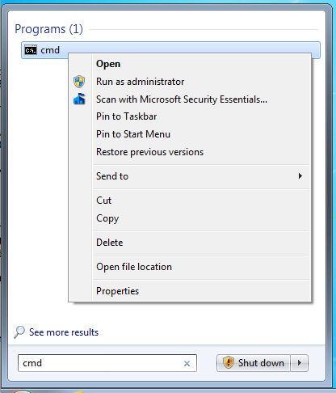
Run command prompt as administrator
Finally, let’s drive Opera:
1 >irb
2
3 > require "watir-webdriver"
4 => true
5
6 > browser = Watir::Browser.new :opera
7 => #<Watir::Browser:0x..fef436832 url="http://www.google.hr/"
8 title="Google">
9
10 > browser.goto "watir.com"
11 => "http://watir.com/"
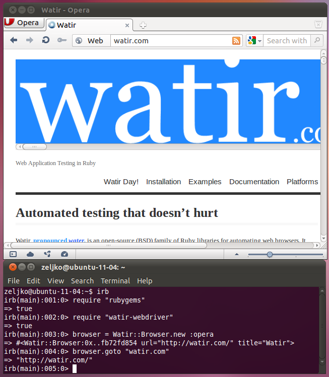
watir-webdriver gem drives Opera 11.50 on Windows 7
And finally, let’s drive Opera. If you do not have it installed, you can get it at opera.com.
1 >irb
2
3 > require "watir-webdriver"
4 => true
5
6 > browser = Watir::Browser.new :opera
7 Selenium::WebDriver::Error::WebDriverError: Unable to find the
8 Selenium server jar. Please download the standalone server from
9 http://code.google.com/p/selenium/downloads/list and set the
10 SELENIUM_SERVER_JAR environmental variable to its location. More
11 info at http://code.google.com/p/selenium/wiki/OperaDriver.
Download selenium-server-standalone-2.5.0.jar (or newer version) from
http://code.google.com/p/selenium/downloads/list and put it in C:\Ruby192\bin. Then make SELENIUM_SERVER_JAR environmental variable and set it to C:\Ruby192\bin\selenium-server-standalone-2.5.0.jar. To create environmental variable right click My Computer and then Properties > Advanced > Environment Variables > User variables > New > Variable name: SELENIUM_SERVER_JAR > Variable value: C:\Ruby192\bin\selenium-server-standalone-2.5.0.jar > OK > OK > OK
Open new command prompt, the old one will not see SELENIUM_SERVER_JAR variable.
1 >irb
2
3 > require "watir-webdriver"
4 => true
5
6 > browser = Watir::Browser.new :opera
7 Selenium::WebDriver::Error::UnhandledError: Could not start the
8 process:
9 Cannot run program
10 "C:\Documents and Settings\zeljko\.launcher\
11 launcher-win32-i86pc.exe":
12 CreateProcess error=14001, This application has failed to start
13 because the
14 application configuration is incorrect. Reinstalling the
15 application may fix this problem
16 Build info: version: '2.5.0', revision: '13516', time:
17 '2011-08-23 18:29:57'
18 System info: os.name: 'Windows XP', os.arch: 'x86',
19 os.version: '5.1', java.version: '1.6.0_26'
20 Driver info: driver.version: OperaDriver
21 (org.openqa.selenium.WebDriverException)
I got Windows Firewall popup. Since I do not know what to do with it, just close the popup.
Windows Firewall blocking Java
I also got This application has failed to start because the application configuration is incorrect. Reinstalling the application may fix this problem error message. Well, rebooting did not help. Not even reinstalling Opera (and then rebooting). What did help is installing Microsoft Visual C++ 2008 Redistributable Package (x86).
Finally, let’s drive Opera:
1 >irb
2
3 > require "watir-webdriver"
4 => true
5
6 > browser = Watir::Browser.new :opera
7 => #<Watir::Browser:0x..fef436832 url="http://www.google.hr/"
8 title="Google">
9
10 > browser.goto "watir.com"
11 => "http://watir.com/"
You will need internet access if you want to follow examples in this chapter.
Mac OS X 10.7 default desktop
Machine is a clean installation of Mac OS X 10.7.2, 10.6.8 or 10.5.8, fully patched, with 4 GB RAM. 10.7 has Safari 5.1.2, 10.6 has Safari 5.1 and 10.5 has Safari 5.0.6. Firefox is 9.0.1, Chrome 16, Opera 11.60. All browsers are English (US) version. All steps for Mac OS X 10.7 should also work on 10.8 (Mountain Lion), tested on 10.8.1.
Regarding installing Ruby on Mac, I have good news and bad news. Good news is that Ruby is already installed by default, so you can skip this step if you just want to try Watir. Bad news is that you have an old version of Ruby installed. It will be good enough for trying Watir, but if you decide you want to use it, you will probably want to install a newer version. So, for now, I will skip Ruby installation. I will cover it later.
To check if Ruby is installed on your Mac, open Terminal application (located in /Applications/Utilities) any type ruby -v.
On 10.7 you should get this:
1 $ ruby -v
2 ruby 1.8.7 (2010-01-10 patchlevel 249) [universal-darwin11.0]
On 10.6 you should get this:
1 $ ruby -v
2 ruby 1.8.7 (2009-06-12 patchlevel 174) [universal-darwin10.0]
On 10.5 you should get this:
1 $ ruby -v
2 ruby 1.8.6 (2009-06-08 patchlevel 369) [universal-darwin9.0]
With RubyGems, the same story as with Ruby. It is already installed, but an old version. Let’s see which version is here with gem -v.
On 10.7 you should get this:
1 $ gem -v
2 1.3.6
On 10.6 you should get this:
1 $ gem -v
2 1.3.5
Both versions are pretty old. Watir needs never version. Fortunately, it is easy to upgrade RubyGems with sudo gem update --system:
1 $ sudo gem update --system
2 (...)
3 RubyGems 1.8.12 installed
4 (...)
With RubyGems, the same story as with Ruby. It is already installed, but an old version. Let’s see which version is here with gem -v:
1 $ gem -v
2 1.0.1
RubyGems 1.0.1 is pretty old. Watir needs newer version. Fortunately, it should be easy to upgrade RubyGems with sudo gem update --system:
1 $ sudo gem update --system
2 (...)
3 Updating RubyGems...
4 ERROR: While executing gem ... (Gem::RemoteSourceException)
5 HTTP Response 302 fetching http://gems.rubyforge.org/yaml
Now you see why I said “should be easy”. RubyGems 1.0.1 is so old, it could not even be updated the easy way. See how lucky you are to have this book? Of course there is a way to upgrade to the newer version of RubyGems. The latest version I could install or Ruby 1.8.6 is RubyGems 1.4.2. Download rubygems-update-1.4.2.gem (click Download link), open Terminal window in folder where you have downloaded it (/Users/zeljko/Downloads in my case) and install it:
1 $ sudo gem install -l rubygems-update-1.4.2.gem
2 Successfully installed rubygems-update-1.4.2
3 1 gem installed
4 Installing ri documentation for rubygems-update-1.4.2...
5 Installing RDoc documentation for rubygems-update-1.4.2...
6
7 $ sudo update_rubygems
8 RubyGems 1.4.2 installed
9 File not found: README
Ignore File not found: README error message. Check if RubyGems is updated:
1 $ gem -v
2 1.4.2
Everything is as it should be.
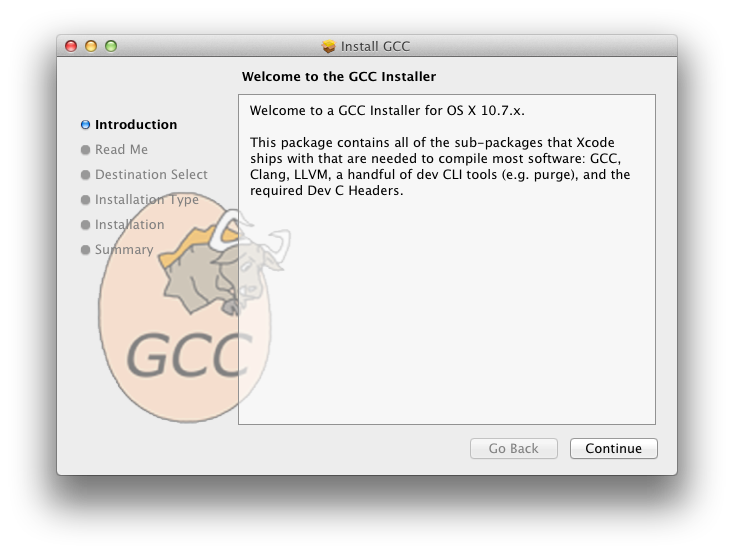
OSX GCC Installer
You will need OSX GCC Installer or Xcode if you want to install watir-webdriver gem. OSX GCC Installer is way smaller than Xcode (287 MB instead of 1.68 GB for 10.7, 180 MB instead of 4.1 GB for 10.6). If you want to install safariwatir gem, OSX GCC Installer is not enough, you will have to install Xcode. There is no OSX GCC Installer for 10.5, you will have to install Xcode 3.1 (“just” 1 GB).
Download OSX GCC Installer from https://github.com/kennethreitz/osx-gcc-installer and install it.
Install Xcode 4.2.1 from App Store
To install Xcode 4.2.1 on 10.7, open App Store application, search for Xcode and download it. Please notice it is 1.68 GB. After the download is complete, you will find Install Xcode.app file in /Applications. Install it.
Xcode 3.2 does not work on Mac OS 10.5. It works on 10.6.
You will need Xcode from Apple if you want to install watir-webdriver or safariwatir gems.
The easiest way to install Xcode is from Mac OS DVD. Insert the DVD, go to Optional Installs folder and double click Xcode.mpkg file.
Install Xcode 3.2 from Mac OS DVD
You can get a newer version from Apple web site. You will need Apple ID. It is username and password you already use for iTunes Store or Mac App Store. If you do not have Apple ID, you can create one for free. Sign in with your Apple ID at Xcode site and on the bottom right you will see Looking for Xcode 3? Download Now. Download Xcode 3.2.6 and iOS SDK 4.3 (Disk Image). Please notice it is 4.1 GB.
You can get the newest Xcode 3.2 without Apple ID and without downloading 4 GB file. Install Xcode 3.2 from Mac OS DVD and run Software Update. It will update Xcode to 3.2.6, and downloaded file will be “just” about 600 MB.
Xcode 3.1 is for Mac OS 10.5. On 10.6 install Xcode 3.2 or Xcode 4.
You will need Xcode from Apple for watir-webdriver and safariwatir gems.
The easiest way to install Xcode is from Mac OS DVD. Insert the DVD, go to Optional Installs/Xcode Tools folder and double click XcodeTools file. Leave all settings at default values.
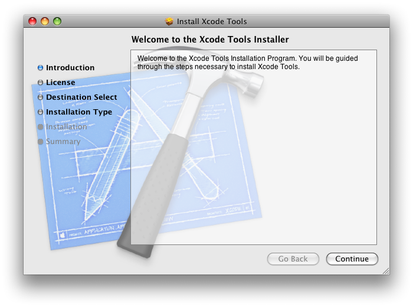
Install Xcode 3.1.2 from Mac OS DVD
Optionally, after Xcode is installed, run Software Update. At the moment, there is no update.
If you do not have Mac OS 10.5 DVD, you can download Xcode 3.1.4 from Apple. Log in to http://connect.apple.com/ with your Apple ID. Click Developer Tools link (at the right hand side, under Downloads) and download Xcode 3.1.4 Developer DVD (Disk Image). Please note it is 993 MB.
Xcode 4 does not work on Mac OS 10.5. It works on 10.6.
According to Xcode site, Xcode 4 “is a free download for all members of the iOS and Mac Developer Programs”. Both programs are $99/year. If you are not a member of mentioned programs (I am not), you can buy it from Mac App Store for $4.99. But, since you can install Xcode 3 for free, there is no need to buy anything.
Safari 5.1 on Mac 10.6
Safari is installed by default on Mac OS X, so you do not have to install it. You do have to install Xcode 3 or 4 (see previous chapters).
If you do not have Xcode installed, you will get this error message if you try to install safariwatir:
1 $ sudo gem install safariwatir --no-ri --no-rdoc
2 (...)
3 Fetching: rb-appscript-0.6.1.gem (100%)
4 Building native extensions. This could take a while...
5 ERROR: Error installing safariwatir:
6 ERROR: Failed to build gem native extension.
7 /System/Library/Frameworks/Ruby.framework/Versions/1.8/
8 usr/bin/ruby extconf.rb
9 mkmf.rb can't find header files for ruby at /System/Library/
10 Frameworks/Ruby.framework/Versions/1.8/usr/lib/ruby/ruby.h
11 Gem files will remain installed in /Library/Ruby/Gems/1.8/gems/
12 rb-appscript-0.6.1 for inspection.
13 Results logged to /Library/Ruby/Gems/1.8/gems/rb-appscript-0.6.1/
14 ./gem_make.out
Install Xcode 3 or 4 and try again:
1 $ sudo gem install safariwatir --no-ri --no-rdoc
2 (...)
3 Successfully installed safariwatir-0.4.0
4 (...)
Let’s try safariwatir.
1 $ irb
2
3 > require "safariwatir"
4 => true
5
6 > browser = Watir::Safari.new
7 => #<Watir::Safari:0x10116fc68
8 @scripter=#<Watir::AppleScripter:0x10116fbf0
9 @js=#<Watir::JavaScripter:0x10116fc18>, @typing_lag=0.08,
10 @app=app("/Applications/Safari.app"),
11 @document=app("/Applications/Safari.app").documents[1],
12 @appname="Safari">>
13
14 > browser.goto "http://watir.com"
15 => nil
It works! :)
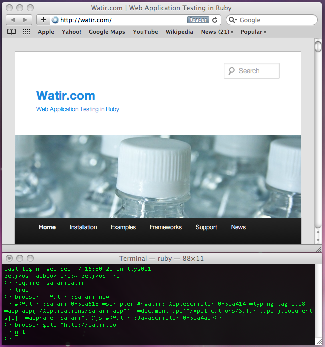
safariwatir gem driving Safari 5 on Mac OS 10.6
Let’s try watir-webdriver gem. For now it can drive Firefox, Chrome and Opera. It should also be able to drive Safari in the future. Install it with sudo gem install watir-webdriver --no-ri --no-rdoc.
If you did not install OSX GCC Installer or Xcode, you will get this:
1 $ sudo gem install watir-webdriver --no-ri --no-rdoc
2 (...)
3 Fetching: ffi-1.0.7.gem (100%)
4 (...)
5 Building native extensions. This could take a while...
6 ERROR: Error installing watir-webdriver:
7 ERROR: Failed to build gem native extension.
8 /System/Library/Frameworks/Ruby.framework/Versions/1.8/
9 usr/bin/ruby/extconf.rb
10 mkmf.rb can't find header files for ruby at
11 /System/Library/Frameworks/Ruby.framework/Versions/1.8/
12 usr/lib/ruby/ruby.h
13 Gem files will remain installed in
14 /Library/Ruby/Gems/1.8/gems/ffi-1.0.7 for inspection.
15 Results logged to
16 /Library/Ruby/Gems/1.8/gems/ffi-1.0.7/ext/ffi_c/gem_make.out
Fortunately, it is easy to fix. Install OSX GCC Installer or Xcode (see previous chapters).
Try again:
1 $ sudo gem install watir-webdriver --no-ri --no-rdoc
2 (...)
3 Successfully installed watir-webdriver-0.3.2
4 (...)
Firefox 6 on Mac OS 10.6
Let’s try to drive Firefox! To drive Firefox, make sure you have it installed. Open our old friend IRB and type this:
1 $ irb
2
3 > require "watir-webdriver"
4 => true
5
6 > browser = Watir::Browser.new :ff
7 => #<Watir::Browser:0x10101ee40 url="about:blank" title="">
8
9 > browser.goto "watir.com"
10 => "http://watir.com/"
Great! We can drive Firefox.
Maybe you will get this warning:
1 > browser = Watir::Browser.new :ff
2 Warning: multi_json is using default ok_json engine. Suggested
3 action: require and load an appropriate JSON library.
4 => #<Watir::Browser:0x105035088 url="about:blank" title="">
You can get rid of the error message by installing json gem:
1 $ sudo gem install json --no-ri --no-rdoc
2 (...)
3 Successfully installed json-1.6.4
4 (...)
watir-webdriver driving Firefox 4 on Mac OS 10.6
There is a problem with driving Firefox 4+ on 10.5:
1 $ irb
2
3 > require "watir-webdriver"
4 => true
5
6 > browser = Watir::Browser.new :ff
7 Selenium::WebDriver::Error::WebDriverError: unable to start
8 Firefox cleanly, args: ["-silent"]
9 (...)
Take a look at https://github.com/jnicklas/capybara/issues/313 for more detail.
The easiest way to fix it is to uninstall the current version of Firefox, and install Firefox 3.6.22. I could not find how to download Firefox 4 or 5, so I did not test with them.
Chrome 13 on Mac OS 10.6
Let’s see if it can really drive Chrome too. To drive Chrome, make sure you have it installed.
1 $ irb
2
3 > require "watir-webdriver"
4 => true
5
6 > browser = Watir::Browser.new :chrome
7 Selenium::WebDriver::Error::WebDriverError: Unable to find the
8 chromedriver executable. Please download the server from
9 http://code.google.com/p/chromium/downloads/list and place it
10 somewhere on your PATH. More info at
11 http://code.google.com/p/selenium/wiki/ChromeDriver.
Looks like we have to install something called chromedriver executable. Fortunately, the error message is pretty clear. Download chromedriver_mac_14.0.836.0.zip (or newer version, the description should be ChromeDriver server for Mac OS X) from
http://code.google.com/p/chromedriver/downloads/list and unzip it (with mouse double-click, for example). You will get a file named chromedriver. Put it somewhere on your PATH, as the error message said. If you have no idea what that means, read on. To find out where to put chromedriver file, type this in Terminal:
1 $ echo $PATH
2 /usr/bin:/bin:/usr/sbin:/sbin:/usr/local/bin:/usr/X11/bin
So, in my case, these folders are on my PATH: /usr/bin, /bin, /usr/sbin, /sbin, /usr/local/bin and /usr/X11/bin. /usr/bin looks like a good place to put chromedriver file. To open the folder, go to Finder > Go > Go to Folder > /usr/bin > Go. Copy the file there. You will have to provide admin password.
Let’s try again:
1 $ irb
2
3 > require "watir-webdriver"
4 => true
5
6 > browser = Watir::Browser.new :chrome
7 => #<Watir::Browser:0x12d610c url="about:blank" title="about:blank">
8
9 > browser.goto "watir.com"
10 => "http://watir.com/"
Finally! It works!
watir-webdriver driving Chrome 12 on Mac OS 10.5
To drive Opera, you need Java. It is not installed by default on Mac OS X 10.7. To install it type java -version in Terminal:
1 $ java -version
2 No Java runtime present, requesting install.
You will get No Java runtime present, requesting install message and a popup window will appear.
Install Java
Click button Install and Java will install. Check if Java is installed with java -version:
1 $ java -version
2 java version "1.6.0_29"
3 Java(TM) SE Runtime Environment (build 1.6.0_29-b11-402-11M3527)
4 Java HotSpot(TM) 64-Bit Server VM (build 20.4-b02-402, mixed mode)
To drive Opera, you need Java. Fortunately, it is already installed. All you have to do is check if it is installed with java -version:
On 10.6 you should get this:
1 $ java -version
2 java version "1.6.0_26"
3 Java(TM) SE Runtime Environment (build 1.6.0_26-b03-384-10M3425)
4 Java HotSpot(TM) 64-Bit Server VM (build 20.1-b02-384, mixed mode)
On 10.5 you should get this:
1 java version "1.5.0_30"
2 Java(TM) 2 Runtime Environment, Standard Edition
3 (build 1.5.0_30-b03-389-9M3425)
4 Java HotSpot(TM) Client VM (build 1.5.0_30-161, mixed mode)
Opera 11.51 on Mac 10.6
Let’s see how it drives Opera. To drive Opera, make sure you have it installed.
1 $ irb
2
3 > require "watir-webdriver"
4 => true
5
6 > browser = Watir::Browser.new :opera
7 Selenium::WebDriver::Error::WebDriverError: Unable to find the
8 Selenium server jar. Please download the standalone server from
9 http://code.google.com/p/selenium/downloads/list and set the
10 SELENIUM_SERVER_JAR environmental variable to its location.
11 More info at http://code.google.com/p/selenium/wiki/OperaDriver.
Error message similar to the one when we first tried to open Chrome. The solution is similar too. We have to download a file, put it somewhere and point a variable to it. Do not worry, it sounds more complicated than it really is. Fortunately again, the error message says it all. Go to http://code.google.com/p/selenium/downloads/list and download selenium-server-standalone-2.5.0.jar (or newer version). Since I have put chromedriver file in /usr/bin, I will put selenium-server-standalone-2.5.0.jar file there too. You will have to provide admin password when copying the file.
The last step is setting SELENIUM_SERVER_JAR environmental variable. Create (if the file does not exist) or edit .bash_profile file in your home folder (/Users/zeljko in my case) with your favorite text editor. Add this line to the file:
1 export SELENIUM_SERVER_JAR=/usr/bin/selenium-server-standalone-2.5.0.jar
If you just got lost, I have step by step guide how to do it. Open new Terminal tab or window (it should open in your home folder by default, /Users/zeljko in my case) and type nano .bash_profile:
1 $ nano .bash_profile
GNU nano text editor will open. Paste (cmd-v, for example) export SELENIUM_SERVER_JAR... line. Exit GNU nano and save the file with control+x. Press y when it asks Save modified buffer (ANSWERING "No" WILL DESTROY CHANGES)? and press Enter when it displays File Name to Write: .bash_profile or Save modified buffer (ANSWERING "No" WILL DESTROY CHANGES)? (text is different if the file already exists or not).
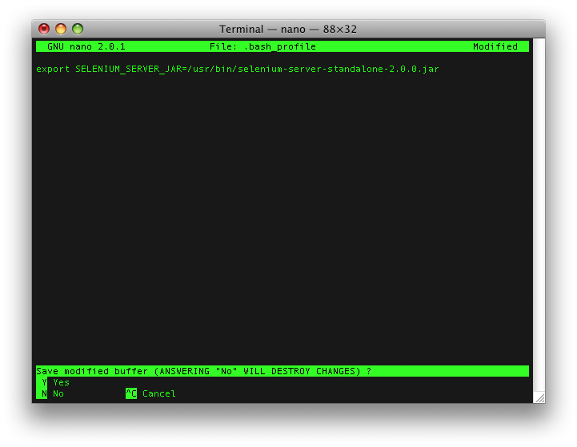
GNU nano asking should it save changes to `.bash_profile` file
If you have done everything right, GNU nano will close and you will see normal Terminal window. We can check if the line is written to .bash_profile file:
1 $ cat .bash_profile
2 export SELENIUM_SERVER_JAR=/usr/bin/selenium-server-standalone-2.5.0.jar
Let’s drive Opera, finally! Open new Terminal window or tab (this is important, already opened windows or tabs would not see SELENIUM_SERVER_JAR variable).
1 $ irb
2
3 > require "watir-webdriver"
4 => true
5
6 > browser = Watir::Browser.new :opera
7 #<Watir::Browser:0x1017f6a28 url="opera:debug" title="Connect to Debugger">
watir-webdriver gem drives Opera 11.51 on Mac 10.6
You will need internet access if you want to follow examples in this chapter.
Ubuntu Linux 11.04 default desktop
Machine is a clean installation of Ubuntu Linux 11.04, fully patched, 512 MB RAM. Firefox 5.0, Chrome 12, Opera 11.50.
Let’s see if Ubuntu comes with Ruby installed. Open Terminal (Applications > Accessories > Terminal) and type ruby -v:
1 $ ruby -v
2 The program 'ruby' is currently not installed. You can install it
3 by typing:
4 sudo apt-get install ruby
Install it with sudo apt-get install ruby:
1 $ sudo apt-get install ruby
2 (...)
3 Setting up libruby1.8 (1.8.7.302-2) ...
4 Setting up ruby1.8 (1.8.7.302-2) ...
5 Setting up ruby (4.5) ...
6 (...)
Check the version with ruby -v:
1 $ ruby -v
2 ruby 1.8.7 (2010-08-16 patchlevel 302) [i686-linux]
Ruby 1.8.7 is pretty good, but 1.9.2 would be better. Since we just want to get Watir installed the easiest possible way, we will user Ruby 1.8.7.
Let’s see the version of RubyGems we got with Ruby with gem -v:
1 $ gem -v
2 The program 'gem' is currently not installed. You can install it
3 by typing:
4 sudo apt-get install rubygems1.8
Looks like we did not get any version installed. We will install RubyGems with apt-get, since that is the easiest way:
1 $ sudo apt-get install rubygems1.8
2 (...)
3 Setting up ruby1.8-dev (1.8.7.302-2) ...
4 Setting up rubygems1.8 (1.3.7-3) ...
Ask RubyGems for it’s version with gem -v:
1 $ gem -v
2 1.3.7
RubyGems 1.3.7 is really old (May 13, 2010). Let’s try to update it the usual way, with gem update --system:
1 $ gem update --system
2 ERROR: While executing gem ... (RuntimeError)
3 gem update --system is disabled on Debian, because it will
4 overwrite the content of the rubygems Debian package, and
5 might break your Debian system in subtle ways. The
6 Debian-supported way to update rubygems is through apt-get,
7 using Debian official repositories. If you really know what
8 you are doing, you can still update rubygems by setting the
9 REALLY_GEM_UPDATE_SYSTEM environment variable, but please
10 remember that this is completely unsupported by Debian.
Since I do not really know what I am doing, I will leave RubyGems at version 1.3.7 and hope everything will work.
I think that Watir-webdriver gem is the future of Watir. In short, it can drive Firefox, Chrome and Opera.
Install watir-webdriver gem with sudo gem install watir-webdriver --no-ri --no-rdoc.
1 $ sudo gem install watir-webdriver --no-ri --no-rdoc
2 (...)
3 Successfully installed watir-webdriver-0.2.8
4 4 gems installed
Firefox on Ubuntu 11.04
Since Firefox is installed by default on Ubuntu, you do not have to install it.
Let’s check if it can drive Firefox:
1 $ irb
2
3 > require "rubygems"
4 => true
5
6 > require "watir-webdriver"
7 => true
8
9 > browser = Watir::Browser.new :ff
10 => #<Watir::Browser:0x..fb734a4d8 url="about:blank" title="">
11
12 > browser.goto "watir.com"
13 => "http://watir.com/"
Watir-webdriver drives Firefox on Ubuntu 11.04
No problem here, works just fine.
Chrome on Ubuntu 11.04
Now, lets see if it can really drive Chrome too. Ubuntu does not have Chrome installed by default, so you have to install it yourself. Download it from google.com/chrome. After installation Chrome will appear at Applications > Internet > Chrome.
1 $ irb
2
3 > require "rubygems"
4 => true
5
6 > require "watir-webdriver"
7 => true
8
9 > browser = Watir::Browser.new :chrome
10 Selenium::WebDriver::Error::WebDriverError: Unable to find the
11 chromedriver executable. Please download the server from
12 http://code.google.com/p/chromium/downloads/list and place it
13 somewhere on your PATH. More info at
14 http://code.google.com/p/selenium/wiki/ChromeDriver.
15 (...)
Looks like we have to install something called chromedriver executable. Fortunately, the error message is pretty clear. Download chromedriver_linux32_14.0.836.0.zip (or newer version, the description should be ChromeDriver server for linux32) from
http://code.google.com/p/chromium/downloads/list and unzip it (mouse right click and then Extract Here, for example). You will get a file named chromedriver. Put it somewhere on your PATH, as the error message said.
The easiest way to do it on Ubuntu is to create a folder called bin in your home folder (/home/zeljko/bin in my case). You have to reboot (or at least log out and then log in, but I have not checked that) and by some magic (provided by /home/zeljko/.profile file in my case) /home/zeljko/bin folder will appear in your PATH:
1 $ echo $PATH
2 /home/zeljko/bin:/usr/local/sbin:/usr/local/bin:/usr/sbin:/usr/bin:
3 /sbin:/bin:/usr/games
Let’s drive Chrome, finally:
1 $ irb
2
3 > require "rubygems"
4 => true
5
6 > require "watir-webdriver"
7 => true
8
9 > browser = Watir::Browser.new :chrome
10 => #<Watir::Browser:0x..fb743b7d4 url="about:blank" title="about:blank">
11
12 > browser.goto "watir.com"
13 => "http://watir.com/"
And it really works!
Watir-webdriver drives Chrome on Ubuntu 11.04
To drive Opera, you will have to install Java first. Let’s check if Java is already installed with java -version:
1 $ java
2 The program 'java' can be found in the following packages:
3 * gcj-4.4-jre-headless
4 * gcj-4.5-jre-headless
5 * openjdk-6-jre-headless
6 Try: sudo apt-get install <selected package>
Looks like we will have to install Java. Install it with sudo apt-get install openjdk-6-jre-headless:
1 $ sudo apt-get install openjdk-6-jre-headless
2 (...)
3 Setting up openjdk-6-jre-lib (6b22-1.10.2-0ubuntu1~11.04.1) ...
4 Setting up icedtea-6-jre-cacao (6b22-1.10.2-0ubuntu1~11.04.1) ...
5 Setting up icedtea-6-jre-jamvm (6b22-1.10.2-0ubuntu1~11.04.1) ...
6 Setting up ca-certificates-java (20100412) ...
7 creating /etc/ssl/certs/java/cacerts...
8 done.
Let’s check if Java is really installed with java -version:
1 $ java -version
2 java version "1.6.0_22"
3 OpenJDK Runtime Environment (IcedTea6 1.10.2)
4 (6b22-1.10.2-0ubuntu1~11.04.1)
5 OpenJDK Client VM (build 20.0-b11, mixed mode, sharing)
Looks good to me!
Opera on Ubuntu 11.04
To drive Opera make sure you have it installed.
Let’s see how it drives Opera. Open our old friend, IRB:
1 $ irb
2
3 > require "rubygems"
4 => true
5
6 > require "watir-webdriver"
7 => true
8
9 > browser = Watir::Browser.new :opera
10 Selenium::WebDriver::Error::WebDriverError: Unable to find the
11 Selenium server jar. Please download the standalone server from
12 http://code.google.com/p/selenium/downloads/list and set the
13 SELENIUM_SERVER_JAR environmental variable to its location.
14 More info at http://code.google.com/p/selenium/wiki/OperaDriver.
15 (...)
Error message similar to the one when we first tried to open Chrome. The solution is similar too. We have to download a file, put it somewhere and point a variable to it. Do not worry, it sounds more complicated than it really is. Fortunately again, the error message says it all. Go to http://code.google.com/p/selenium/downloads/list and download selenium-server-standalone-2.5.0.jar (or newer version, the description should be Use this if you want to use the Selenium RC or Remote WebDriver or use Grid 2 without needing any additional dependencies). Since I have put chromedriver file in /home/zeljko/bin, I will put this file there too.
The last step is setting SELENIUM_SERVER_JAR environmental variable. If you just got lost, I have step by step guide how to do it. Open Nautilus and go to your home folder: Places > Home Folder. You want to edit .bashrc file, but by default files that have names starting with dot are not displayed. To see the file go to View > Show Hidden Files. Doubleclick .bashrc file (it will open the file in gedit editor). Add this line to the file:
1 export SELENIUM_SERVER_JAR=~/bin/selenium-server-standalone-2.5.0.jar
Save the file and close all Terminal windows. Open Terminal again. To check if the variable is set, try printenv | grep SELENIUM:
1 $ printenv | grep SELENIUM
2 SELENIUM_SERVER_JAR=/home/zeljko/bin/selenium-server-standalone-2.5.0.jar
Looks good to me! After all this work, enjoy driving Opera:
1 $ irb
2
3 > require "rubygems"
4 => true
5
6 > require "watir-webdriver"
7 => true
8
9 > browser = Watir::Browser.new :opera
10 => #<Watir::Browser:0x..fb72fd854 url="http://watir.com/" title="Watir">
11
12 > browser.goto "watir.com"
13 => "http://watir.com/"
Watir-webdriver drives Opera on Ubuntu 11.04